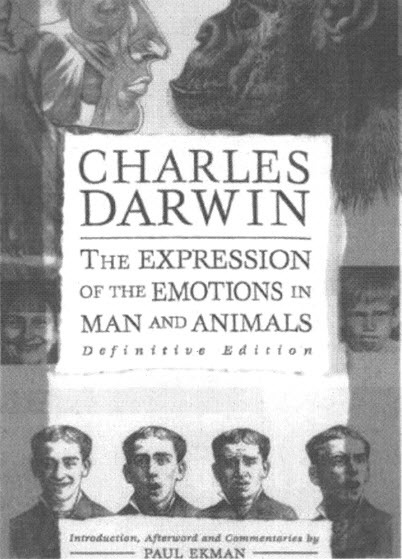

本书第二版的编者序
·Preface to the Second Edition·
在我的父亲还没有去世的时候，这本书的第一版还没有售完，所以他没有机会再亲自把那些为了增订第二版而收集的资料发表出来。这些资料，是由大批信件、各种书籍里的摘录与参考文字、短文和评论所构成；我就打算把这些资料利用到现在这本书里来。还有，我也利用了一些在这本书第一版出版以后所著述的文献，但是因为我阅读得不多，所以绝不能说这些资料已经是完备的。
遵照我的父亲在第一版的书里，用铅笔所写的备考，我在现在这本书里作了几处订正。其他由我所作的增补文字，则作为附注，并且加用方括弧标明，以便区别。
弗兰西斯·达尔文
1889年9月2日于剑桥

本书英文版封面